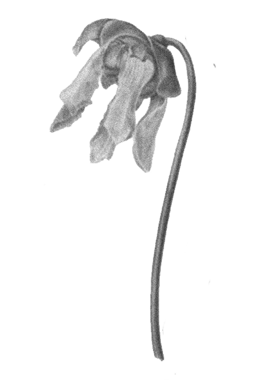

Love as
Fantasy
In A Midsummer Night’s Dream, love is often portrayed as fleeting, deceptive, and dreamlike:
Characters fall in and out of love due to magic (the love potion).
The play blurs the line between reality and illusion—was it all a dream?
Bottom, transformed into a donkey, experiences love with the fairy queen Titania, only to wake up and realize it was all an absurd fantasy.
The lyrics of Darn That Dream express the bittersweet longing for a love that only exists in dreams:
The song captures the pain of waking up from a dream of love, only to face reality—just like many characters in A Midsummer Night’s Dream.
It reflects the temporary, illusory nature of love, much like how Shakespeare’s characters experience love under the spell of the flower, only to realize it wasn’t real.
The dreamlike, melancholic mood of the song perfectly fits the surreal atmosphere of the play.
